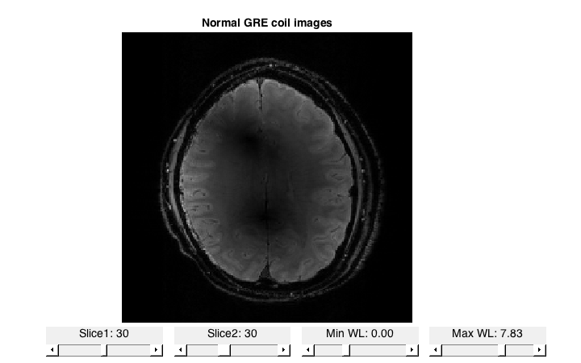
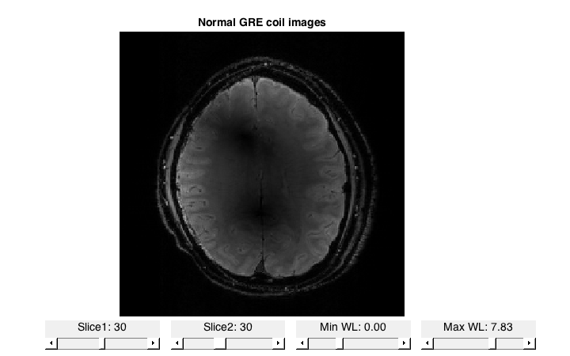
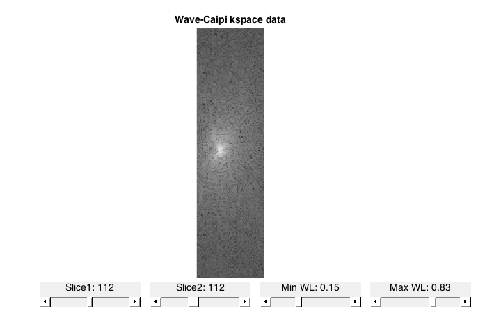
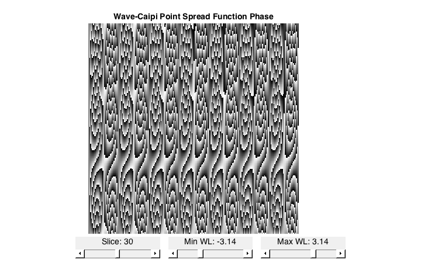
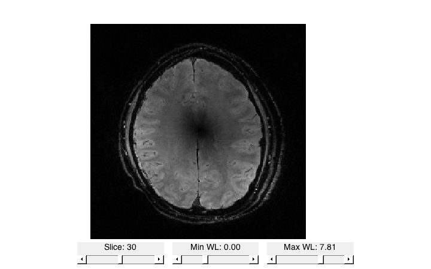
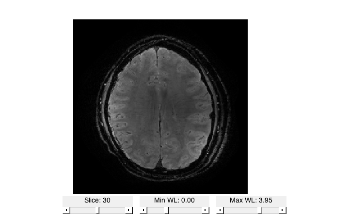
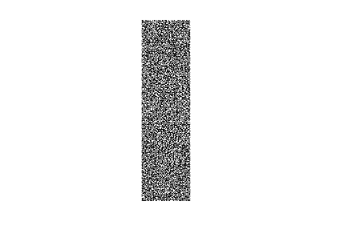
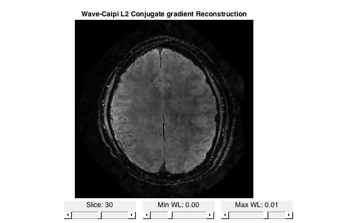
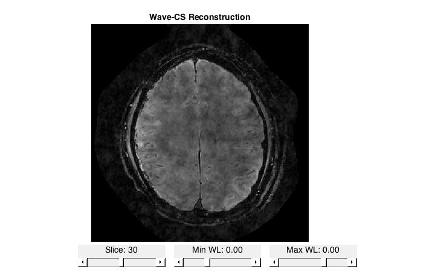

Contents
- Wave-Caipi Compressed Sensing Demo
- Load normal GRE data
- Generate ESPIRiT map
- Load Wave-Caipi data and visualize
- Reconstruct Wave-Caipi using FFT
- Load point spread function and visualize
- Fully sampled Wave reconstruction step-by-step
- Fully sampled Wave reconstruction using BART
- Generate poisson disk undersampling mask
- Undersample Wave-Caipi data
- Zero-filled reconstruction
- L2 recon for wave gre
- L1 recon for wave gre
Wave-Caipi Compressed Sensing Demo
This demo demonstrates ESPRiT reconstruction on Wave-Caipi data using the Berkeley Advanced Reconstruction Toolbox (BART) The datasets are kindly provided by Dr. Berkin at the MGH. The datasets are coil-compressed for computational efficiency. !!! Note that this is for tutorial purpose only. The dataset has been highly compressed to the point that the results do not look good.
clear close all orientation = [-2,1,3]; % Plot tool orientation addpath('plot');
Load normal GRE data
We first load a "normal" GRE dataset to generate sensitivity maps for Wave-Caipi reconstruction.
% Read kspace kspace_gre = readcfl('data/kspace_gre'); figure, imshow3f( abs(kspace_gre).^0.1, orientation ), drawnow titlef('Normal GRE kspace'); % IFFT img_gre = bart('fft -i 7', kspace_gre); figure, imshow4f( abs(img_gre), orientation ), drawnow titlef('Normal GRE coil images'); % Root sum of squares img_gre_sos = bart('rss 8', img_gre); figure, imshow3f( img_gre_sos, orientation ), drawnow titlef('Normal GRE sum of squares');
 
 
Generate ESPIRiT map
We will now generate sensitivity maps using ESPIRiT The maps will also be used by Wave-Caipi reconstruction later on.
% Calibration size calib_size = 16; % ESPIRiT Calibration maps = bart(sprintf('bart ecalib -r %d -c 0.3 -m 1', calib_size), kspace_gre); % maps = readcfl('data/maps_gre'); % Plot figure, imshow4f( maps )
Done.

Load Wave-Caipi data and visualize
kspace_wave = readcfl('data/kspace_wave'); [Nx, Ny, Nz, Nc] = size(kspace_wave); figure,imshow4f( abs(kspace_wave).^0.1 , [2,3,1]); titlef('Wave-Caipi kspace data');
Reconstruct Wave-Caipi using FFT
The wrong way of reconstructing Wave-Caipi data
% IFFT img_direct = bart('fft -i 7', kspace_wave); % Root sum of squares img_direct_rss = bart('rss 8', img_direct); figure,imshow3f( img_direct_rss, orientation); titlef('Wave-Caipi FFT Reconstruction (The Wrong Way)');

Load point spread function and visualize
psf = readcfl('data/psf'); figure, imshow3f( angle(psf), orientation ); titlef('Wave-Caipi Point Spread Function Phase');
Fully sampled Wave reconstruction step-by-step
The correct way to reconstruct a wave-caipi data is to first perform a ifft along the phase encoding directions, compensate for the point spread function and then perform another ifft along the readout direction.
% IFFT y and z kspace_yz = bart('fft -i 6', kspace_wave); % Compensate for PSF kspace_yz_psf = kspace_yz .* repmat(conj(psf), [1,1,1,Nc]); % IFFT x img_wave = bart('fft -i 1', kspace_yz_psf); % Root sum of squares img_wave_rss = bart('rss 8', img_wave); % Plot figure,imshow3f( img_wave, orientation);
Fully sampled Wave reconstruction using BART
Alternatively, the entire reconstruction operator is incorporated in BART. For fully-sampled image, the adjoint option (-a) performs the above steps exactly.
% Wave-Caipi reconstruction img_wave = bart('wave -a', kspace_wave, maps, psf); % Plot figure,imshow3f( img_wave, orientation);
Size: 3010560 Samples: 3010560 Acc: 1.00
Generate poisson disk undersampling mask
We will now genereate a 1.5 x 1.5 poisson disk undersampling mask
Ry = 1.5; % ky acceleration factor Rz = 1.5; % kz acceleration factor mask = bart(sprintf('poisson -Y %d -Z %d -y %d -z %d',... Ny,Nz, Ry, Rz)); figure,imshow3f(abs(squeeze(mask))) mask = repmat(mask, [Nx,1,1,Nc]);
points: 5908, grid size: 224x60 = 13440 (R = 2.274882)
Undersample Wave-Caipi data
We now undersample the wave caipi data by multiplying with the sampling mask
kspace_wave_und = kspace_wave .* mask;
figure,imshow4f( abs(kspace_wave_und).^0.1 , [2,3,1]);
titlef('Wave-Caipi undersampled kspace data');

Zero-filled reconstruction
We can perform a zero-filled reconstruction by using the wave -a adjoint option again.
img_recon_zero = bart('wave -a', kspace_wave_und, maps, psf); figure,imshow3f(img_recon_zero, orientation); titlef('Wave-Caipi Zero-filled Reconstruction');
Size: 3010560 Samples: 1321376 Acc: 2.28
L2 recon for wave gre
We can perform an L2 reconstruction by adding regularization weight -r 0.01
img_recon_l2 = bart('wave -r 0.01', kspace_wave_und, maps, psf); figure,imshow3f(img_recon_l2, orientation); titlef('Wave-Caipi L2 Conjugate gradient Reconstruction');
Size: 3010560 Samples: 1321376 Acc: 2.28
L1 recon for wave gre
We can perform an L1 reconstruction by specifying the flag -l and adding regularization weight -r 0.01
img_recon_l1 = bart('wave -l -r 0.01', kspace_wave_und, maps, psf); figure,imshow3f(img_recon_l1, orientation); titlef('Wave-CS Reconstruction');
Size: 3010560 Samples: 1321376 Acc: 2.28